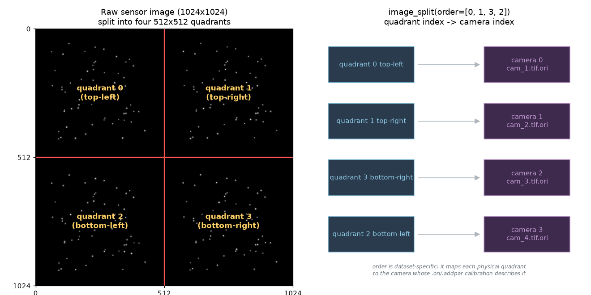

Tutorial: 4-View Image Splitter in openptv2¶
This tutorial walks through the complete workflow for a single-camera,
four-view image-splitter PTV experiment in openptv2: preparing images,
setting parameters, calibrating, running the splitter plugins, and verifying
you get correct 3D correspondences and tracks.
It is grounded in the working reference dataset shipped with the repo,
test_data/test_splitter/, and uses the
demo assets in images/.
1. What a "4-view splitter" is¶
In a splitter setup you have one physical camera and one image per frame. An optical splitter (mirrors or a prism assembly) projects four different views of the same measurement volume onto the four quadrants of the sensor.
You then treat each 512×512 quadrant as an independent virtual camera with its own calibration. Everything downstream (detection, stereo correspondence, triangulation, tracking) runs exactly as a normal 4-camera experiment — the only extra step is splitting the one image into four.

Key facts:
- Raw frame:
1024×1024(one file per time step). - Split into four
512×512quadrants → 4 virtual cameras. - The quadrant→camera order is dataset-specific (see §6). The reference
dataset uses
order=[0, 1, 3, 2]. - Each virtual camera has its own
.ori+.addparcalibration. Because the splitter optics are off-center, the calibrated principal point (xh, yh) can be large — even larger than the quadrant half-size. That is normal and must be handled correctly (it was the source of a real bug — see §9).
A synthetic demo frame is provided:
images/demo_4view.tif (1024×1024, four viewpoints of the
same particle cloud). Regenerate it any time with:
2. Directory layout¶
A splitter experiment is a normal openptv2 experiment directory. Reference:
test_data/test_splitter/
├── parameters_Run1.yaml # single source of truth (YAML-first)
├── parameters/ # legacy .par mirror (auto-derived from YAML)
├── cal/ # calibration: one .ori + .addpar PER quadrant
│ ├── cam_1.tif.ori cam_1.tif.addpar
│ ├── cam_2.tif.ori cam_2.tif.addpar
│ ├── cam_3.tif.ori cam_3.tif.addpar
│ ├── cam_4.tif.ori cam_4.tif.addpar
│ ├── calblock_new.txt # 3D coordinates of the calibration target
│ └── C001H001S0001000001.tif # the (full 1024×1024) calibration image
├── img/ # raw single-sensor frames, one file per time step
│ └── C001H001S000<frame>.tif
├── plugins/ # experiment-local sequence/tracker plugins
│ ├── ext_sequence_splitter.py
│ └── ext_tracker_splitter.py
└── res/ # outputs (rt_is.*, ptv_is.*) are written here
Even though there are four virtual cameras, there is only one raw image series
in img/ and one calibration image in cal/ — both full 1024×1024. The
splitter code does the cropping.
3. Preparing your images¶
- One file per frame, full sensor size (here 1024×1024), 8-bit grayscale TIFF. Color images are converted to grayscale by the plugin.
- Name them with a
%d-style frame token. The reference usesimg/C001H001S000%d.tif, so frame1000001→img/C001H001S0001000001.tif. This pattern lives in the YAML undersequence.base_name[0]. - Quadrant geometry is fixed halves: top-left, top-right, bottom-left,
bottom-right, each
imx/2 × imy/2. There is no gap/border handling — if your splitter has dead bands between views, crop/pad the raw image so each view sits cleanly in its quadrant before running. - The calibration image (
cal/…tif) must be the same full size and produced by the same optical path as the data frames.
Only the first
sequence.base_name/ptv.img_nameentry is used in splitter mode (the other three are'---'placeholders). The four cameras all come from splitting that one image.
4. Parameters (YAML-first)¶
openptv2 is YAML-first: parameters_Run1.yaml
is the single source of truth. The two flags that turn on splitter mode:
ptv:
splitter: true # <-- enable image splitting in the sequence
imx: 512 # <-- QUADRANT size, not the raw sensor size
imy: 512
pix_x: 0.02 # pixel pitch in mm
pix_y: 0.02
hp_flag: true # high-pass before detection
img_name:
- img/C001H001S0001000002.tif # only [0] is used in splitter mode
- '---'
- '---'
- '---'
mmp_n1: 1.0 # multimedia refractive indices (air/glass/water)
mmp_n2: 1.49
mmp_n3: 1.41
mmp_d: 7.5
cal_ori:
cal_splitter: true # <-- split the calibration image the same way
sequence:
base_name:
- img/C001H001S000%d.tif # only [0] is used in splitter mode
- '--'
- '--'
- '--'
first: 1000001
last: 1000005
Critical point: imx/imy are the quadrant dimensions (512×512), NOT the raw
1024×1024 sensor. The calibration is expressed in quadrant coordinates, so every
metric conversion (pixel_to_metric) uses the 512×512 size.
Other sections you will tune (values from the reference dataset):
Detection — targ_rec (the parameters actually used at runtime):
targ_rec:
gvthres: [10, 10, 10, 10] # grey threshold per camera
disco: 50 # max grey discontinuity for blob growth
nnmin: 2 # min/max pixels per particle
nnmax: 200
nxmin: 1 # min/max bounding-box width
nxmax: 15
nymin: 2 # min/max bounding-box height
nymax: 15
sumg_min: 20 # min summed grey
cr_sz: 2 # high-pass / cross size
Correspondence + volume — criteria:
criteria:
X_lay: [-30, 50] # illuminated volume x-extent (mm)
Zmin_lay: [-80, -80] # z at the two x-planes
Zmax_lay: [-15, -15]
cnx: 0.3 # correspondence tolerances (band widths / weights)
cny: 0.3
cn: 0.02
csumg: 0.02
corrmin: 33.0 # minimum correlation to accept a match
eps0: 0.06 # epipolar band half-width (mm) <-- most important knob
eps0 is the epipolar search-band half-width in millimeters. If it is too small
you get zero correspondences; too large and you get false matches. 0.06 mm
works for the reference dataset.
Tracking — track (velocity/acceleration gates in mm/frame):
track:
dvxmin: -1.9 dvxmax: 1.9
dvymin: -1.9 dvymax: 1.9
dvzmin: -1.9 dvzmax: 1.9
dacc: 1.9 # max acceleration
angle: 270.0 # max direction change
flagNewParticles: true
5. Calibration (per quadrant)¶
Each virtual camera needs its own cam_N.tif.ori (exterior + interior
orientation) and cam_N.tif.addpar (Brown distortion: k1,k2,k3,p1,p2,scx,she).
.ori file format (as in cal/cam_1.tif.ori):
x0 y0 z0 # camera position (mm)
omega phi kappa # rotation angles (rad)
<blank>
r11 r12 r13 # 3×3 rotation matrix
r21 r22 r23
r31 r32 r33
<blank>
xh yh # principal point (mm) <-- often large for splitters
cc # camera constant / focal length (mm)
<blank>
gx gy gz # glass/interface vector
Workflow to produce them:
- Enable splitting for calibration with
cal_ori.cal_splitter: true. The calibration image is split into the same four quadrants, so you calibrate each virtual camera against its quadrant of the calibration target image. - Provide the 3D target coordinates in
cal/calblock_new.txt(fixp_nameincal_ori), oneid x y zper control point. - Seed manual orientation. The YAML carries clicked image points per camera in
man_ori_coordinates(4 known points per virtual camera) plus the matching control-point ids inman_ori.nr. These bootstrap the exterior orientation. - Run the calibration (external orientation →
sortgrid→ bundle adjustment). The turnkey path is theopenptv-calibrateskill, which inspects the dataset, helps you click the manual-orientation seed if missing, runs the full external→sortgrid→bundle pipeline, and verifies with reprojection overlays and RMS. In the GUI, the calibration window honorscal_splitterand shows "Using splitter in Calibration".
Sanity checks after calibrating (do these before trusting results):
- Reprojection RMS should be sub-pixel (verify with overlay images).
- A large
xh/yh(e.g.8.77 mmon a 512-px/10.24-mm-wide quadrant) is expected for off-center splitter optics — it is not a sign of bad calibration. Do not "fix" it by zeroing.
6. The splitter plugins¶
Splitter behavior lives in two experiment-local plugins in plugins/:
ext_sequence_splitter.py— detection + correspondence (theSequenceclass,do_sequence()).ext_tracker_splitter.py— temporal tracking (theTrackingclass,do_tracking()).
The core of the sequence plugin (simplified):
full_image = imread(imname) # one 1024×1024 frame
list_of_images = self.ptv.image_split(full_image, order=[0, 1, 3, 2]) # -> 4 views
for i_cam in range(num_cams):
hp = self.ptv.simple_highpass(list_of_images[i_cam], cpar)
targs = self.ptv.target_recognition(hp, tpar, i_cam, cpar) # detect
targs.sort_y()
detections.append(targs)
corrected.append(MatchedCoords(targs, cpar, cals[i_cam])) # pixel->metric->flat
sorted_pos, sorted_corresp, _ = correspondences(detections, corrected, cals, vpar, cpar)
6a. Quadrant order (order=[0, 1, 3, 2])¶
image_split cuts the sensor into [top-left, top-right, bottom-left, bottom-right]
= indices [0,1,2,3], then reorders by order. The list index becomes the
camera index, so order must map each physical quadrant to the camera whose
.ori/.addpar describes it.
[0, 1, 3, 2] means: camera 0 = top-left, camera 1 = top-right,
camera 2 = bottom-right, camera 3 = bottom-left (the bottom two are
swapped — an optics-specific choice). If your correspondences come out near
zero, a wrong order is a prime suspect — the calibration for camera k then
describes the wrong quadrant. Try the permutation that matches how your splitter
routes views to quadrants.
6b. Use openptv2 imports, not optv¶
The plugins shipped importing from the legacy optv C package. In a pure
openptv2 install they must import from openptv2, otherwise openptv2-detected
targets are silently fed to optv's C structures and you get zero
correspondences. Ensure the plugin headers read:
from openptv2.correspondences import correspondences, MatchedCoords
from openptv2.tracker import default_naming, Tracker
from openptv2.orientation import point_positions
(The reference ext_sequence_splitter.py has already been migrated; check
ext_tracker_splitter.py similarly if you copy it into a new experiment.)
7. Running the pipeline¶
Programmatically, via run_batch:
from pathlib import Path
from openptv2.batch.pyptv_batch_plugins import run_batch
run_batch(
yaml_file=Path("test_data/test_splitter/parameters_Run1.yaml"),
seq_first=1000001,
seq_last=1000002,
sequence_plugin="ext_sequence_splitter",
tracking_plugin="ext_tracker_splitter",
mode="sequence", # "sequence" | "tracking" | "both"
)
mode="sequence"runs detection + correspondence and writesres/rt_is.<frame>.mode="tracking"links particles across frames →res/ptv_is.<frame>.mode="both"does sequence then tracking.run_batchchdirs into the YAML's directory, so all relative paths in the YAML resolve against the experiment folder.
Tip for testing: run against a copy of the experiment. The plugins write
cam*_targetsandrt_is.*files in place, so pointing at your pristine dataset will modify it. Copy the folder to a scratch dir (ortmp_pathin tests) first.
From the GUI (pyptv_gui), open the experiment; splitter mode is picked up from
ptv.splitter / cal_ori.cal_splitter, and the selected plugins come from the
plugins section of the YAML.
8. Getting — and verifying — the right results¶
A correct run prints per-frame correspondence counts as
[quadruplets, triplets, pairs]:
Frame 1000001 had [1247, 914, 24] correspondences.
Frame 1000002 had [1210, 929, 16] correspondences.
and writes res/rt_is.<frame> with one line per triangulated 3D point:
where x y z are metric 3D coordinates and p0..p3 are the target indices in each
camera (−1 = not seen in that camera).
How to verify you got it right:
- Non-zero, sensible correspondence counts. Thousands of quads/trips for a
dense seeded flow; a flat
[0, 0, 0]means something is wrong (see §9). - Detection counts per camera are in the same ballpark across the four views (a few thousand for the demo/reference); a camera with ~0 targets points to a bad quadrant crop, threshold, or high-pass.
- 3D points fall inside the illuminated volume defined by
criteria(X_lay,Zmin/Zmax_lay). Points far outside indicate a calibration orordererror. - Ground-truth parity (optional but decisive): if you have the legacy
optvpackage installed, run the same detections throughoptv'sMatchedCoords+correspondencesand compare — corrected coordinates should match to floating-point, and counts should match within detection noise.
9. Troubleshooting¶
Symptom: Frame N had [0, 0, 0] correspondences. (everything else looks fine)
Root causes, in order of likelihood:
- Wrong quadrant
order— camera k's calibration describes a different quadrant than the one handed to it. Try the permutation matching your optics. eps0too small — widen the epipolar band incriteria.eps0.- Plugin importing from
optvinstead ofopenptv2(§6b) — cross-package type mismatch silently yields zero matches. - Principal point not applied in the flat-coordinate transform. This was a
real openptv2 bug:
MatchedCoords' distortion-correction step must subtract the principal point(xh, yh)(viatrafo.dist_to_flat). With centered calibrations it was invisible, but splitter cameras have largexh/yh, so every coordinate landed ~xhmm off and epipolar bands missed every target. It is fixed in current openptv2; if you maintain a fork, confirmopenptv2.transforms.distorted_to_flatdelegates toopenptv2.algorithms.trafo.dist_to_flat(which subtractsxh, yhand applies the full Brown-affine model), not a radial-only reimplementation.
Symptom: one camera detects far fewer/no targets
- Check that quadrant's gvthres, that the high-pass isn't erasing signal, and
that the quadrant actually contains that view (visualize image_split output).
Symptom: imx/imy confusion
- They must be the quadrant size (512×512), not the raw sensor (1024×1024).
Wrong values corrupt every pixel→metric conversion.
Symptom: results differ by a few targets vs legacy optv
- A ~0.5% detection difference is a known, benign fidelity gap in the peak-detection
raster order; it does not materially affect correspondence quality.
10. Quick start (copy-paste)¶
# 1. Work on a scratch copy so the fixture stays clean
cp -r test_data/test_splitter /tmp/my_splitter
# 2. (Optional) regenerate the demo assets used by this tutorial
uv run python docs/tutorials/four_view_splitter/make_demo_assets.py
# 3. Run sequence (detection + correspondence)
uv run python - <<'PY'
from pathlib import Path
from openptv2.batch.pyptv_batch_plugins import run_batch
run_batch(
yaml_file=Path("/tmp/my_splitter/parameters_Run1.yaml"),
seq_first=1000001, seq_last=1000002,
sequence_plugin="ext_sequence_splitter",
tracking_plugin="ext_tracker_splitter",
mode="sequence",
)
PY
# 4. Inspect results
head /tmp/my_splitter/res/rt_is.1000001
Expected: non-zero [quads, trips, pairs] printed per frame, and res/rt_is.*
populated with 3D points. That is a correct 4-view splitter run.